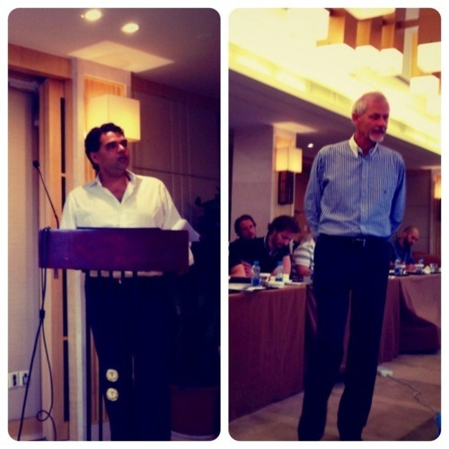

Day one @BerlinSchool was started by (surprisingly) interesting lecture by Dick van Motman, President & CEO of Greater China DDB.
Having very low opinion on advertising industry in general (yea, there I said it!), especially from foreign MNCs ad agencies in China, I was highly skeptical that this would be an exception. China has witnessed many fail stories (one more spectacular than others) of ad agencies trying to find their luck in the middle kingdom. They (ad agencies) may not admit it, but deep down they know that they’re not performing as good as they wanted to be.

However, I was pleasantly surprised to find that there’s an exception to every rules.
To his credits, Dick van Motman is a brilliant and interesting speaker (many smart people are in fact terrible at public speaking), however, I was middy disappointed by his rather shallow presentation that merely skimming the surface. I felt like, after living nearly 7+ years in China, I wanted to be surprised. Show me something I don’t know.
I lost count on how many times I was amazed at the level of ignorance that I encountered in many top management executives of renowned foreign firms in Shanghai. Never mind the fact that most of them don’t even speak Mandarin (I become more forgiving these days about this particular subject), but their sheer ignorance of what makes China ‘China’ was simply…. amazing.
I did, however, appreciate when Van Motman fluently describe his challenges of running a business and team in China. This, I could relate to. Yes, the scale of his responsibilities were ten times larger (if not more) than mine, but the underlying sentiments were profoundly similar. That managing mix-culture team in country like China definitely ain’t for the faint of heart.
I found myself groping my way around trying to navigate the complexity of Chinese culture, the multi-layered meanings of every words and gestures, and the total chaos of its day to day social dynamic. And to hear that others experience similar challenges (again, not in the same magnitude) was a relief to me. Some kind of endorsement that I’ve been doing not too shabby. Oh, I’ve made mistakes, alright. But I’d be damned if I ain’t learn from them. Living in China has been both humbling and exhilarating experience at the same time.
to be continued…